卜co- 1 0
CI
CT - 9 8
7 6 5 4 3 2
11 10
物理地址
索引标记位有效位块0块1块2块3 0
PPO
■PPN
19 |
1 |
99 |
11 |
23 |
11 |
15 |
0 |
— |
— |
— |
— |
1B |
1 |
00 |
02 |
04 |
08 |
36 |
0 |
— |
— |
— |
— |
32 |
1 |
43 |
6D |
8F |
09 |
0D |
1 |
3,6 |
72 |
F0 |
1D |
31 |
0 |
— |
— |
— |
— |
16 |
1 |
11 |
C2 |
DF |
03 |
24 |
1 |
3A |
00 |
51 |
89 |
2D |
0 |
— |
— |
— |
|
2D |
1 |
93 |
15 |
•DA |
3B |
0B |
0 |
— |
— |
— |
— |
12 |
0 |
— |
— |
— |
. — |
16 |
1 |
04 |
96 |
34 |
15 |
13 |
1 |
83 |
77 |
1B |
D3 |
14 |
0 |
— |
— |
— |
— |
c)高速缓存：16个组，4字节的块，直接映射 图9-20小存储器系统的TLB、页表以及缓存。TLB、页表和缓存中所有的值都是十六进制表示的
•TLB。TLB是利用VPN的位进行虚拟寻址的。因为TLB有四个组，所以VPN的低两位就 作为组索引（TLBI)。VPN中剩下的高6位作为标记（TLBT),用来区别可能映射到同一 个TLB组的不同的VPN。
•页表 。这个页表是一个单级设计 ，一 共有2 8 =256个页表条目（PTE)。然而，我们只对这 些条目中的开头16个感兴趣。为了方便，我们用索引它的VPN来标识每个PTE;但是要 记住这些VPN并不是页表的一部分，也不储存在存储器中。另外，注意每个无效PTE的 PPN都用一个破折号来表示，以加强一个概念：无论刚好这里存储的是什么位值，都是没 有任何意义的。
•高速 缓存。直接映射的缓存是通过物理地址中的字段来寻址的。 因 为每个块都是4字节, 所以物理地址的低2位作为块偏移（C0)。因为有16组，所以接下来的4位就用来表示组 索引（CI)。剩下的6位作为标记（CT)。
给定了这种初始化设定，让我们来看看当CPU执行一条读地址0x03d4处字节的加载指令 时会发生什么。（回想一下我们假定CPU读取1字节的字，而不是4字节的字。）为了开始这种 手工的模拟，我们发现写下虚拟地址的各个位，标识出我们会需要的各种字段，并确定它们的 十六进制值，这是非常有帮助的。当硬件解码地址时，它也执行相似的任务。
■ •- . |
TLBT 0x03 |
TLBI 0X03 |
|||||
位位置 |
13 |
12 |
11 10 9 |
8 7 6 |
5 |
4 3 2 |
1 0 |
VA = 0x03d4 |
0 |
0 |
0 0 1 |
1 1 1 |
0 |
1 0 1 |
0 0 |
VPN |
VPO |
||||||
03t0f |
0x14 |
开始时，MMU从虚拟地址中抽取出VPN (OxOF),并且检查TLB,看它是否因为前面的 某个存储器引用，缓存了 PTE OxOF的一个拷贝。TLB从VPN中梱取出TLB索引（0x03)和 TLB标记（0x3),组0x3的第二个条目中有效匹配，所以命中，然后将缓存的PPN (OxOD) 返回给MMU。 -
如果TLB不命中，那么MMU就需要从主存中取出相应的PTE。然而，在这种情况下，我 们很幸运，TLB会命中。现在，MMU有了形成物理地址所需要的所有东西。它通过将来自PTE 的PPN (OxOD)和来自虚拟地址的VPO (0x14)连接起来，这就形成了物理地址（0x354)。
接下来，MMU发送物理地址给缓存，缓存从物理地址中抽取出缓存偏移CO (0x0)、缓存 组索引CI (0x5)以及缓存标记CT (OxOD)。
CT CI CO |
|||||||
OxOd |
0x05 |
0x0 |
|||||
位位置 |
11 . |
10 |
9 8 |
7 |
6 5 |
4 3 2 |
1 0 |
PA = 0x354 |
0 |
0 |
1 1 |
0 |
1 0 |
10 1 |
0 0 |
PPN |
PPO |
||||||
OxOd |
0x14 |
||||||
因为组0x5中的标记与CT相匹配，所以缓存检测到一个命中，读出在偏移量CO处的数据 字节（0x36)，并#它返回给随后MMU将它传递回CPU。
翻译过程的其他路径也是可能的。例如，如果TLB不命中，那么MMU必须从页表中的PTE 中取出PPN。如果得到的PTE是无效的，那么就产生一个缺页，内核必须调入合适的页面，重新 运行这条加载指令。另一种可能性是?TE是有效的，但是所需要的存储器块在缓存中不命中。
_练习题 9.4 说明 9.6.4 节中的示例存储器系统是如何将一个虚拟地址翻译成一个物理地址和访问缓存 的。对于给定的虚拟地址，指明访问的 TLB 条目、物理地址和返回的高速缓存字节值。指出是否发生 了 TLB 不命中，是否发生了缺页，以及是否发生了缓存不命中。如果是缓存不命中，在“返回的缓存 字节”栏中输入“一”。如果有缺页，则在 “PPN” 一栏中输入“一”，并且将 C 部分和 D 部分空着。 虚拟地址 ：0x03d7 A. 虚拟地址格式
13 12 11 10 9 8 7 6 5 4 3 2 1 0
B.地址翻译
参数 |
值 |
■ VPN |
|
TLB索引 , |
|
TLB标记 |
|
TLB命中？（是/否） |
|
缺页？（是/否） |
|
PPN |
C.物理地址格式
10 9876543210
D.物理存储器引用
参数 |
值 |
字节#移 |
|
缓存索引 |
|
缓存标记 |
|
缓存命中？（是/否） |
|
返回的缓存字节 |
9.7 案例研究 ：Intel Core i7/Linux 存储器系统
我们以一个实际系统的案例研究来概括我们对缓存和虚拟存储器的讨论：一个运行Linux的 Intel Core i7。Core i7是基于Nehalem微体系结构的。虽然Nehalem设计允许完全的 64 位虚拟 和物理地址空间，而现在的（以及可预见的未来的）Core i7实现支持48位（256 TB)虚拟地址 空间和52位（4PB)物理地址空间，还有一个兼容模式，支持32位（4GB)虚拟和物理地址 空间。
图9-21给出了 Core i7存储器系统的重要部分。处理器包（processor package)包括四个核、 一个大的所有核共享的L3高速缓存,，以及一个DDR3存储器控制器。每个核包含一个层次结构 的TLB、一个层次结构的数据和指令高速缓存，以及一组快速的点到点连接，这种连接是基于 Intel QuickPath技术的，是为了让一个核与其他核和外部I/O桥直接通信。TLB是虚拟寻址的， 是四路组相连的。L1、.L2和L3高速缓存是物理寻址的，是八路组相连的，块大小为64字节。 页大小在启动时被配置为4 KB或4 MB。Linux使用的是4 KB的页。
处理器包 核 x4 、
L2 统一高速缓存 256 KB, 8 路 |
|
L3 统一高速缓存 8MB，16 鉻 * ( 所有的核共享） |
|
到其他核 到 I/O 桥
QuickPath 互连 ，4 条 链路 @ 25.6 GB/s 总無 102.4 GB/s
DDR3 存储器控制器 3 x 64 位 @ 10.66 GB/s 总共 32 GB/s ( 所有的核共享）
寄存器
取指令
MMU
( 地址翻译）
Ll d-cache |
Ll i-cache |
Ll d-TLB |
Ll i-TLB |
|||
32 KB, 8 路 |
32 KB, 8 路 |
64 个条目， 4 路 |
128 个条目， 4 路 |
L2 统一 TLB 512 个条目 ’ 4 路
主存
图9-21 Core i7存储器系统 .
Core i7地址翻译
图9-22总结了完整的Core 17地址翻译过程，从CPU产生虚拟地址的时刻一直到来自存储 器的数据字到达CPU。Core i7釆用四级页表层次结构。每个进程有它自己私有的页表层次结构。 当一个Linux进程正在运行时，虽然Core i7体系结构允许页表换进换出，与已分配了的页相关 联的页表都是驻留在存储器中的。CR3控制寄存器指向第一级页表（L1)的起始位置。CR3的 值是每个进程上下文的一部分，每次上下文切换时，CR3的值都会被重置。
图9-23给出了第一级、第二级或第三级页表中条目的格式。当P=1时（Limix中就总是如 此)，地址字段包含一个40位物理页号（PPN),它指向适当的页表的开始处。注意，这强加了 一个要求，要求物理页表4 KB对齐。 ^
图9-24给出了第四级页表中条目的格式。当P =l,地址字段包括40位PPN,它指向物理 存储器中某一页的基地址。这又强加了一个要求,要求物理页4 KB对齐。
PTE有三个权限位，控制对页的访问。R/W位确定页的内容是可以读写的还是只读的。U/ S位确定是否能够在用户模式中访问该页，从而保护操作系统内核中的代码和数据不被用户程 序访问。XD (禁止执行）位是在64位系统中引人的，可以用来禁止从某些存储器页取指令。 这是一个重要的新特性，通过限制只能执行只读文本段，使得操作系统内核降低了缓冲区溢出 攻击的风险。
当MMU翻译每一个虚拟地址时，它还会更新另外两个内核缺页处理程序会用到的位。每次 访问一个页时，MMU都会设置A位，.称为 引用位 （reference bit)。内核可以用这个引用位来实 现它的页替换算法。每次对一个页进行了写之后，MMU都会设置D位，又 称脏位 （dirty bit)。 脏位告诉内核在拷贝替换页之前是否必须写回牺牲页。内核可以通过调用一条特殊的内核模式指 令来清除引用位或脏位。
CPU |
32/64 |
L2、L3和主存 |
||||
钴思 |
||||||
虚3 |
腿址(VA) 12 |
|||||
VPO
VPN
L1
命中
L1
不命中
321
TLBT
nz
TLBI
TLB
命中
&J-I
TLB
不命中
i_^ |
^ T > i j. |
- ” |
|
hH |
A v |
• " • . |
LI d-cache (64组，8行/组）
sj
13
rz
LI TLB (16组，4个条目/组）
9
VPNl |
VPN2 |
VPN3 |
VPN4 |
40
12
40
CT
CI
CO
物理地址 (PA)
9
f J PTE J |
\：： ,, ^FIE J |
f f ^ . ^PTE |
图 9-22 Core il 地址翻译的概况。为了简化 , 没有显示 i-cache 、 i-TLB 和 L2 统一 TLB
|
63 |
62 52 51 |
12 11 9 |
8 |
7. |
6. |
5 |
4 |
3 |
2 • |
1 |
0 |
||
|
XD |
未使用 |
页表物理基地址 |
未.使用 |
G |
PS |
A |
CD |
WT |
U/S |
R/W |
P=1 |
||
OS可用（磁盘上的页表位置）
P=0
字段 |
. 描述. |
P |
子页表在物理存储器中（1)，不在(0) |
R/W |
对于所有可访问页，只读或者读写访问权限 |
U/S |
对于所有可访问页，用户或超级用户（内核）模式访问权限 |
WT |
子页表的直写或写回缓存策略 |
CD |
能/不能缓存子页表 |
A |
引用位（由MMU在读和写时设置，由软件清除） |
PS |
页大小为4 KB或4 MB (值对第一层PTE定义） |
Base addr |
子页表的物理基地址的最高40位 |
XD |
能/不能从这个PTE可访问的肼有页中取指令 |
图 9-23 第一级、第二级和第三级页表条目格式。每个条目引用一个 4 KB 子页表
图9-25给出了 Core il MMU如何使用四级的页表来将虚拟地址翻译成物理地址。36位VPN 被划分成四个9位的片，每个片被用作到一个页表的偏移量。CR3寄存器包含L1页表的物理地 址。VPN1提供到一个L1PET的偏移量，这个PTE包含L2页表的基地址。VPN2提供到一个 L2PTE的偏移量，以此类推。
XD |
未使用 |
页表物理基地址 |
未使用 |
G |
0 |
D |
A |
CD |
WT |
u/s |
R/W |
P=1 |
OS可用（磁盘上的页表位置）
P=0
字段 |
描述 |
P |
子页表在物理存储器中（1)，不在（0) |
R/W |
对于子页，只读或者读写访问权限 |
U/S |
对于子页，用户或超级用户（内核）模式访问权限 |
WT |
子页的直写或写回缓存策略 |
CD |
能/不能缓存 |
A |
引用位（由MMU在读和写时设置，由软件清除） |
D |
修改位（由MMU在读和写时设置，由软件清除） |
G |
全局页（在任务切换时，不从TLB中驱逐出去） |
Base addr |
子页物理基地址的最髙40位 |
XD |
能/不能从这个子页中取指令 |
图9-24第四级页表条目的格式。每个条目引用一个4KB子页
|
9 |
9 |
9 |
9 |
12 |
|
VPN1 |
VPN2 |
VPN3 |
VPN4 |
VP0 |
虚拟地址
L1PT
页全局目录 40 directory
L2PT
页上层目录 40 directory
L3PT
页中层目录
40 directory
UPT
.页表
40 table
L1PT 的 物理地址
12
L3PTE
到物理和虚拟 页的偏移量
每个条目 512 GB 区域
每个条目 1GB区域
每个条目 2 MB 区域
每个条目 4KB区域
页的物理 地址
40
12
40
PP0
物理地址
图9-25 Core i7页表翻译。图例：PT ：页表，PTE ：页表条目，VPN ：虚拟页号，VP0 ：虚拟页偏移, PPN:物理页号，PP0:物理页偏移量。图中还给出了这四级页表的Linux名字
优化地址翻译
在对地址翻译的讨论中，我们描述了一个顺序的两个步骤的过程，1)MMU将虚拟地址翻 译成物理地址，2)将物理地址传送到L1高速缓存。然而，实际的硬件实现使用了一个灵巧的技 巧，允许这些步骤部分重叠，因此也就加速了对L1高速缓存的访问。例如，页面大小为4KB的
Core \1 系统上的一个虚拟地址有12位的VPO,并且这些位和相应物理地址中的PPO的12位是 相同的。因为八路组相连的、物理寻址的L1高速缓存有64个组和大小为64字节的缓存块，每 个物理地址有6个（log 2 64)缓存偏移位和6个（log 2 64)索引位。这12位恰好符合虚拟地址的 VPO部分，这绝不是偶然！当CPU需要翻译一个虚拟地址时，它就发送VPN到MMU,发送 VPO到L1高速缓存。当MMU向TLB请求一个页表条目时，L1高速缓存正忙着利用VPO位 查找相应的组，并读出这个组里的八个标记和相应的数据字。当MMU从TLB得到PPN时，缓 存已经准备好试着把这个PPN与这八个标记中的一个进行匹配了。
Linux虚拟存储器系统
一个虚拟存储器系统要求硬件和内核软件之间的紧密协作。版本与版本之间细节都不尽相 同，对此完整的阐释超出了我们讨论的范围。但是，在这一小节中我们的目标是对Linux的虚拟 存储器系统做一个描述，使你能够大致了解一个实际的操作系统是如何组织虚拟存储器，以及如 何处理缺页的。
Linux为每个进程维持了一个单独的虚拟地址空间，形式如图9-26所示。我们已经多次看到 过这幅图了，包括它那些熟悉的代码、数据、堆、共享库以及栈段。既然理解了地址翻译，我们 就能够填入更多的关于内核虚拟存储器的细节了，这部分虚拟存储器位于用户栈之上。
都不相同
对每个进程 都一样
0x08048000(32).
0x40000000(64)'
%esp-
brk-
|
< |
与进程相关的数据结构 (例如，页表、task和 mm结构，内核栈） |
|
物理存储器 |
|
|
内核代码和数据 |
|
|
用户栈 |
|
|
W |
頃灣零 __ |
|
共享库的存储器映射区域 |
|
|
__w |
,__s 圓 |
|
'W |
运行时堆 (通过malloc分配的） |
|
未初始化的数据（.bss) |
|
|
已初始化数据( - data) |
|
|
w |
•程序文件（• text) |
|
' l W 0 |
内核虚拟存储器
进程虚拟存储器
图9-26 —个Linux进程的虚拟存储器
内核虚拟存储器包含内核中的 代码和数据结构。内核虚拟存储器 的某些区域被映射到所有进程共享 的物理页面。例如，每个进程共享 内核的代码和全局数据结构。有趣 的是，Linux也将一组连续的虚拟 页面（大小等于系统中DRAM的总 量）映射到相应的一组连续的物理 页面。这就为内核提供了一种便利 的方法来访问物理存储器中任何特 定的位置，例如，当它需要访问页 表，或在一些设备上执行存储器映 射的I/O操作，而这些设备被映射 到特定的物理存储器位置时。
内核虚拟存储器的其他区域包 含每个进程都不相同的数据。例 如，页表、内核在进程的上下文 中执行代码时使用的栈，以及记 录虚拟地址空间当前组织的各种 数据结构。
Linux虚拟存储器区域
Linux将虚拟存储器组织成一些区域（也叫做段）的集合。一个区域（area)就是已经存在 着的（已分配的）虚拟存储器的连续片（chunk),这些页是以某种方式相关联的。例如，代码 段、数据段、堆、共享库段，以及用户栈都是不同的区域。每个存在的虚拟页面都保存在某个区 域中，而不属于某个区域的虚拟页是不存在的，并且不能被进程引用。区域的概念很重要，因为 它允许虚拟地址空间有间隙。内核不用记录那些不存在的虚拟页，而这样的页也不占用存储器、
磁盘或者内核本身的任何额外资源。
图9-27强调了记录一个进程中虚拟存储器区域的内核数据结构。内核为系统中的每个进程 维护一个单独的任务结构（源代码中的task一struct)。任务结构中的元素包含或者指向内核 运行该进程所需要的所有信息（例如，PID、^向用户栈的指针、可执行目标文件的名字以及程 序计数器)。 "
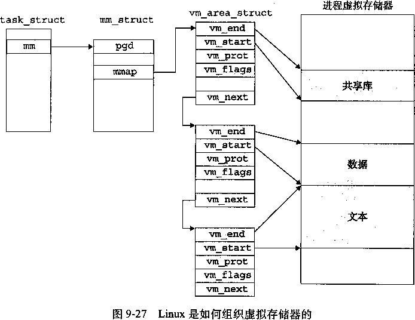
task一struct中的一个条目指向mm一struct,它描述了虚拟存储器的当前状态。我们感 兴趣的两个字段是pgd和mmap,其中pgd指向第一级页表（页全局目录）的基址，而mmap 指向一个vm_area_structs (区域结构）的链表，其中每个vm_area__structs都描述了当 前虚拟地址空间的一个区域（area)。当内核运行这个进程时，它^将pgl存放在CR3控制寄存 器中。
为了我们的目的，一个具体区域的区域结构包含下面的字段：
vm_start ：指向这个区域的起始处。
vm_end ：指向这个区域的结束处。
vm一prot ：描述这个区域内包含的所有页的读写许可权限。
•vm—flags ••描述这个区域内的页面是与其他进程共享的，还是这个进程私有的（还描述了 其石一些信息)。
vm—next ：指向链表中下一个区域结构。
Linux缺页异常处理
假设MMU在试图翻译某个虚拟地址A时，触发了一个缺页。这个异常导致控制转移到内 核的缺页处理程序，处理程序随后就执行下面的步骤：
1)虚拟地址A是合法的吗？换句话说，A在某个区域结构定义的区域内吗？为了回答这个 问题，缺页处理程序搜索区域结构的链表，把A和每个区域结构中的vm—start和vm一end做 比较。如果这个指令是不合法的，那么缺页处理程序就触发一个段错误，A而终止这个^程。这
种情况在图9-28中标识为“1”。
因为一个进程可以创建任意数量的新虚拟存储器区域（使用在下一节中描述的mmap函数)， 所以顺序搜索区域结构的链表花销可能会很大。因此在实际中，Linux使用某些我们没有显示出 来的字段，Linux在链表中构建了一棵树，并在这棵树上进行査找。
试图进行的存储器访问是否合法？换句话说，进程是否有读、写或者执行这个区域内页 面的权限？例如，这个缺页是不是由一条试图对这个代码段里的只读页面进行写操作的存储指令 造成的？这个缺页是不是因为一个运行在用户模式中的进程试图从内核虚拟存储器中读取字造成 的？如果试图进行的访问是不合法的，那么缺页处理程序会触发一个保护异常，从而终止这个进 程。这种情况在图9-28中标识为“2”。
此刻，内核知道了这个缺页是由于对合法的虚拟地址进行合法的操作造成的。它是这样 来处理这个缺页的：选择一个牺牲页面，如果这个牺牲页面被修改过，那么就将它交换出去，换 入新的页面并更新页表。当缺页处理程序返回时，CPU重新启动引起缺页的指令，这条指令将 再次发送A到MMU。这次，MMU就能正常地翻译A,而不会再产生缺页中断了。
进程虚拟存储器
area struct
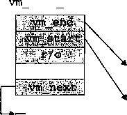
Tie 」
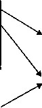
VTn
V
* |
|
泰 |
|
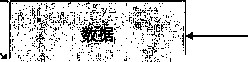
@正常缺页
保护异常：
例如，违反许可， ^写一个只读的页面
8
图9-28 Linux缺页处理
9.8 存储器映射
Linux (以及其他一些形式的Unix)通过将一个虚拟存储器区域与一个磁盘上 的对象 (object)关联起来，以初始化这个虚拟存储器区域的内容，这个过程称 为存储器映射 (memory mapping)o虚拟存储器区域可以映射到两种类型的对象中的一种：
Unix 文件系统中的普通文件： 一个区域可以映射到一个普通磁盘文件的连续部分，例如 一个可执行目标文件。文件区（section)被分成页大小的片，每一片包含一个虚拟页面的初始内 容。因为按需进行页面调度，所以这些虚拟页面没有实际交换进入物理存储器，直到CPU第一 次引用到页面（即发射一个虚拟地址，落在地址空间这个页面的范围之内）。如果区域比文件区 要大，那么就用零来填充这个区域的余下部分。
匿名 文件： 一个区域也可以映射到一个匿名文件，匿名文件是由内核创建的，包含的全
是二进制零。CPU第一次引用这样一个区域内的虚拟页面时，内核就在物理存储器中找到一个 合适的牺牲页面，如果该页面被修改过，就将这个页面换出来，用二进制零覆盖牺牲页面并更 新页表，将这个页面标记为是驻留在存储器中的。注意在磁盘和存储器之间并没有实际的数据 传送。因为这个原因，映射到匿名文件的区域中的页面有时也叫 做请求二进制零的页 （demand- zero page)。
无论在哪种情况下，一旦一个虚拟页面被初始化了，它就在一个由内核维护的专门的交换 文件 （swap file) 之间换来换去。交换文件也 叫做交换空间 （swap space) 或者交 换区域 （swap area)。需要意识到的很重要的一点是，在任何时刻，交换空间都限制着当前运行着的进程能够 分配的虚拟页面的总数。
9.8.1 再看共享对象
存储器映射的概念来源于一个聪明的发现：如果虚拟存储器系统可以集成到传统的文件系统 中，那么就能提供一种简单而髙效的把程序和数据加载到存储器中的方法。
正如我们已经看到的，进程这一抽象能够为每个进程提供自己私有的虚拟地址空间，可以免 受其他进程的错误读写。不过，许多进程有同样的只读文本区域。例如，每个运行Unix外壳程 序tcsh的进程都有相同的文本区域。而且，许多程序需要访问只读运行时库代码的相同拷贝。 例如，每个C程序都需要来自标准C库的诸如printf这样的函数。那么，如果每个进程都在 物理存储器中保持这些常用代码的复制拷贝，那就是极端的浪费了。幸运的是，存储器映射给我 们提供了一种清晰的机制，用来控制多个进程如何共享对象。
一个对象可以被映射到虚拟存储器的一个区域，要么作 为共享对象， 要么作 为私有对象。 如 果一个进程将一个共享对象映射到它的虚拟地址空间的一个区域内，那么这个进程对这个区域的 任何写操作，对于那些也把这个共享对象映射到它们虚拟存储器的其他进程而言也是可见的。而 且，这些变化也会反映在磁盘上的原始对象中。
另一方面，对一个映射到私有对象的区域做的改变，对于其他进程来说是不可见的，并且进 程对这个区域所做的任何写操作都不会反映在磁盘上的对象中。一个映射到共享对象的虚拟存储 器区域叫 做共享区域。 类似地，也 有私有区域。
假设进程1将一个共享对象映射到它的虚拟存储器的一个区域中，如图9-29a所示。现在假 设进程2将同一个共享对象映射到它的地址空间（并不一定要和进程1在相同的虚拟地址处，如 图9-29b所示）。
进程 1 的 物理 进程 2 的 进程 1 的 物理 进程 2 的
虚拟存储器 存储器 虚拟存储器 虚拟存储器 存储器 虚拟存储器
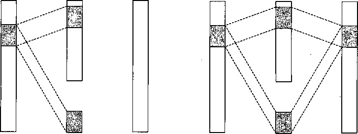
共享对象 共享对象
a)进程1映射了共享对象之后 b)进程2映射了同一个共享对象之后
图9-29 —个共享对象（注意，物理页面不一定是连续的。）
因为每个对象都有一个唯一的文件名，内核可以迅速地判定进程1已经映射了这个对象，而 且可以使进程2中的页表条目指向相应的物理页面。关键点在于即使对象被映射到了多个共享区 域，物理存储器中也只需要存放共享对象的一个拷贝。为了方便，我们将物理页面显示为连续 的，但是在一般情况下当然不是这样的。
私有对象是使用一种 叫做写时拷贝 （copy-on-write)的巧妙技术被映射到虚拟存储器中的。 一个私有对象开始生命周期的方式基本上与共享对象的一样，在物理存储器中只保存有私有对象 的一份拷贝。比如，图9-30a展示了一种情况，其中两个进程将一个私有对象映射到它们虚拟存 储器的不同区域，但是共享这个对象同一个物理拷贝。对于每个映射私有对象的进程，相应私有 区域的页表条目都被标记为只读，并且区域结构被标记 为私有的写时 拷贝。只要没有进程试图写 它自己的私有区域，它们就可以继续共享物理存储器中对象的一个单独拷贝。然而，只要有一个 进程试图写私有区域内的某个页面，那么这个写操作就会触发一个保护故障。
当故障处理程序注意到保护异常是由于进程试图写私有的写时拷贝区域中的一个页面而引起 的，它就会在物理存储器中创建这个页面的一个新拷贝，更新页表条目指向这个新的拷贝，然后 恢复这个页面的可写权限，如图9-30b所示。当故障处理程序返回时，CPU重新执行这个写操 作，现在在新创建的页面上这个写操作就可以正常执行了。
通过延迟私有对象中的拷贝直到最后可能的时刻，写时拷贝最充分地使用了稀有的物理存 傾恭。
进程2的 虚拟存储器
进程1的 虚拟存储器
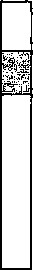
进程1的 虚拟存储器
物理
存储器
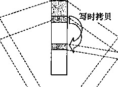
进程2的 虚拟存储器
写私有的写 时拷贝的页
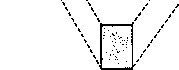
物理
存储器
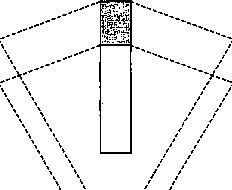
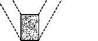
私有的写时拷贝对象 私有的写时拷贝对象
a)两个进程都映射了私有的写时拷贝对象之后 b)进程2写了私有区域中的一个页之后
••图9-30 —个私有的写时拷贝对象
9.8.2 再看 fork 函数
既然我们理解了虚拟存储器和存储器映射，那么我们可以清晰地知道fork函数是如何创建 一个带有自己独立虚拟地址空间的新进程的。
当fork函数 被当前进程调 用时，内核为 新进程 创建各种数据结构，并分配给它一个唯一的 PID。为了给这个新进程创建虚拟存储器，它创建了当前进程的mm—struct、区域结构和页表 的原样拷贝。它将两个进程中的每个页面都标记为只读，并将两个ii程中的每个区域结构都标记 为私有的写时拷贝。
当fork在新进程中返回时，新进程现在的虚拟存储器刚好和调用fork时存在的虚拟存储 器相同。当这两个进程中的任一个后来进行写操作时，写时拷贝机制就会创建新页面，因此，也 就为每个进程保持了私有地址空间的抽象概念。
9.8.3 再看 execve 函数
虚拟存储器和存储器映射在将程序加载到存储器的过程中也扮演着关键的角色。既然已经理 解了这些概念，我们就能够理解execve函数实际上是如何加载和执行程序的。假设运行在当 前进程中的程序执行了如下的调用：
Execve("a.out M , NULL, NULL);
正如在第8章中学到的，execve函数在当前进程中加载并运行包含在可执行目标文件a. out 中的程序，用a • out程序有效地替代了当前程序。加载并运行a • out需要以下几个步骤：
•删除已存在的用户 区域。删除当前进程虚拟地址的用户部分中的已存在的区域结构。
• 映射私有区域。 为新程序的文本、数据、bss 和 栈区域创建新的区域结构。所有这些新的 区域都是私有的、写时拷贝的。文本和数据区域被映射为a.out文件中的文本和数据区。 bss区域是请求二进制零的，映射到匿名文件，其大小包含在a. out中。栈和堆区域也是 请求二进制零的，初始长度为零。图9-31概括了私有区域的不同映射。
•映 射共享区域。 如果a .out程序与共享对象（或目标）链接，比如标准C库libc .so,那 么这些对象都是动态链接到这个程序的，然后再映射到用户虚拟地址空间中的共享区域内。 •设置程序计数器 （PC)。execve做的最后一件事情就是设置当前进程上下文中的程序计 数器，使之指向文本区域的入口点。
下一次调度这个进程时，它将从这个入口点开始执行。Linux将根据需要换入代码和数据页面。
-私有的，请求二进制零的
加载器是如何映射用户地址空间的区域的
9.8.4 使用 mmap 函数的用户级存储器映射
Unix进程可以使用mmap函数来创建新的虚拟存储器区域，并将对象映射到这些区域中。
#include <unistd.h>
#include <sys/mman.h>
void *mmap(void *start, size_t length, int prot, int flags, int fd, off_t offset);
返回：若成功时则为指向映射区域的指针，若出错则为MAP_FAILED (—1)。
用户栈
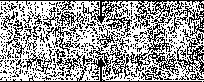
libc.so
^ 共享的，文件提供的
.data .text
共享库的存储器映射区域
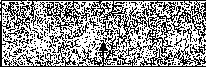
运行时堆 (通过malloc分配的）
未初始化的数据(.bss )
-私有的，请求二进制零的 -私有的，请求二进制零的 •私有的，文件提供的
a.out
已初始化的数据(.data)
.data
.text
程序文本（text)
0
图 9-31
mmap函数要求内核创建一个新的虚拟存储器区域，最好是从地址start开始的一个区域, 并将文件描述符fd指定的对象的一个连续的片（dmnk)映射到这个新的区域。连续的对象片 大小为length字节，从距文件开始处偏移量为of f set字节的地方开始。start地址仅仅是 一个暗示，通常被定义为NULL。为了我们的目的，我们总是假设起始地址为NULL。图9-32 描述了这些参数的意义。
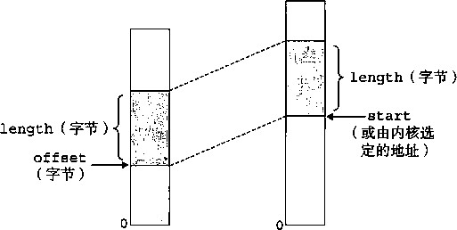
文件描述符fd指定 进程虚拟存储器
的磁盘文件
图 9-32 mmap 参数的可视化解释
参数prot包含描述新映射的虚拟存储器区域的访问权限位（在相应区域结构中的vm_ prot 位）。
PROT_EXEC ：这个区域内的页面由可以被CPU执行的指令组成。
PROT一READ ：这个区域内的页面可读。
PROT_WRITE ：这个区域内的页面可写。
•PROT 一 NONE : 这个区域内的页面不能被访问。
参数flags由描述被映射对象类型的位组成。如果设置了 MAP—ANON标记位，那么被映射 的对象就是一个匿名对象，而相应的虚拟页面是请求二进制零的。MAP一PRIVATE表示被映射的 对象是一个私有的、写时拷贝的对象，而MAP_SHARED表示是一个共享对象。例如
bufp = Mmap(-1, size, PR0T_READ, MAP^PRIVATEI MAP.ANON, 0, 0);
让内核创建一个新的包含size字节的只读、私有、请求二进制零的虚拟存储器区域。如果调用 成功，那么bufp包含新区域的地址。 munmap函数删除虚拟存储器的区域 ：
#include <unistd.h> |
|
#include <sys/mman.h> |
|
int munmap(void *start, size_t length); |
|
返回：若成功则为0，若出错则为一1。 |
munmap函数删除从虚拟地址start开始的，由接下来length字节组成的区域。接下来对已 删除区域的引用会导致段错误。
11^1练习题9.5编写一个C程序mmapcopy .c,使用mmap将一个任意大小的磁盘文件拷贝到stdout。 输入文件的名字必须作为一个命令行参数来传递。
9.9 动态存储器分配
虽然可以使用低级的mmap和munmap函数来创建和删除虚拟存储器的区域，但是C程 序员还是会觉得当运行时需要额外虚拟存储器时 ，用动态存储器分配器 （dynamic memory allocator)更方便，也有更好的可移植性。
动态存储器分配器维护着一个进程的虚拟存储器区域，称为堆（heap)(见图9-33)。系统之 间细节不同，但是不失通用性，我们假设堆是一个请求二进制零的区域，它紧接在未初始化的 bss区域后开始，并向上生长（向更高的地址)。对于每个进程，内核维护着一个变量brk (读 做“break”)，它指向堆的顶部。
用户栈
分配器将堆视为一组不同大小的块（Wock)的 集合来维护。每个块就是一个连续的虚拟存储器片 (chunk),要么 是已分 配的，要么是空 闲的。 已分配的 块显式地保留为供应用程序使用。空闲块可用来分配。
共享库的存储器映射区域
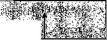
堆
未初始化的数据（.bss)
空闲块保持空闲，直到它显式地被应用所分配。一个 已分配的块保持已分配状态，直到它被释放，这种释 放要么是应用程序显式执行的，要么是存储器分配器 自身隐式执行的。
分配器有两种基本风格。两种风格都要求应用显 @ (brk 指针）
式地分配块。它们的不同之处在于由哪个实体来负责 释放已分配的块。
程序文件（.text)
已初始化的数据(- data)
•显式分配器（ explicitallocator),要求应用显式地 释放任何已分配的块。例如，C标准库提供一种叫 做malloc程序包的显式分配器。C程序通过调用 malloc函数来分配一个块，并通过调用free函 数来释放一 个块。 C-H■中的new和delete操作符 图9-33堆
与C中的malloc和free相当。
•隐式分配器 （implicit allocator),另一方面，要求分配器检测一个已分配块何时不再被程序 所使用 ， 那么就释放这个块。隐式分配器也叫 做垃圾收集器（ garbagecollector),而自动释 放未使用的已分配的块的过程 叫做垃圾收集 （garbage collection )。 例如，像Lisp、ML以 及Java之类的高级语言就依赖垃圾收集来释放已分配的块。
本节剩下的部分讨论的是显式分配器的设计和实现。我们将在9.10节中讨论隐式分配器。 为了更具体，我们的讨论集中于管理堆存储器的分配器。然而，应该明白存储器分配是一个普遍 的概念，可以出现在各种上下文中。例如，图形处理密集的应用程序就经常使用标准分配器来要 求获得一大块虚拟存储器，然后使用与应用相关的分配器来管理块中的存储器，以支持图形节点 的创建和销毁。
9.9.1 malloc 和 free 函数
C标准库提供了一个称为malloc程序包的显式分配器。程序通过调用malloc函数来从 堆中分配块。
返回：若成功则为指针，若出错则为NULL。
#include <stdlib.h> void *malloc(size_t size);
malloc函数返回一个指针，指向大小为至少size字节的存储器块，这个块会为可能包含 在这个块内的任何数据对象类型做对齐。在我们熟悉的Unix系统上 ， malloc返回一个8字节 (双字）边界对齐的块。 ^
一个字有多大？
回想一下在第 3 章中我们对机器代码的讨论 ， Intel 将 4 字节对象称为双字。然而，在本节 中，我们会假设字是 4 字节的对象，而双字是 8 字节的对象，这和传统术语是一致的。
如果malloc遇到问题（例如，程序要求的存储器块比可用的虚拟存储器还要大)，那么它 就返回NULL, mm errno Q malloc不初始化它返回的存储器。那些想要已初始化的动态存 储器的应用程序可以使用calloc, calloc是一个基于malloc的瘦包装函数，它将分配的存 储器初始化为零。想要改变一个以前已分配块的大小，可以使用realloc函数。
动态存储器分配器，例如malloc,可以通过使用mmap和munmap函数，显式地分配和释
|
放堆存储器，或者还可以使用sbrk函数： |
|
|
#include <unistd.h> |
|
|
void *sbrk(intptr_t incr); |
|
|
返回：若成功则为旧的brk指针，若出错则为一1。 |
|
sbrk函数通过将内核的brk指针增加incr来扩展和收缩堆。如果成功，它就返回brk的旧 值，否则，它就返回-1,并将errno设置为ENOMEM。如果incr为零，那么sbrk就返回 brk的当前值。用一个为负的incr来调用sbrk是合法的，而且很巧妙，因为返回值（brk的 旧值）指向距新堆顶向上abs (incr)字节处 6
程序是通过调用free函数来释放已分配的堆块。
#include <stdlib.h> |
|
void free(void *ptr); |
返回：无。 |
ptr参数必须指向一个从malloc、calloc或者realloc获得的已分配块的起始位置。如果 不是，那么free的行为就是未定义的。更糟的是,既然它什么都不返回，free就不会告诉应 用出现了错误。就像我们将在9.11节里看到的，这会产生一些令人迷惑的运行时错误。
图9-34展示了一个malloc和free的实现是如何管理一个C程序的16字的（非常）小的 堆的。每个方框代表了一个4字节的字。粗线标出的矩形对应于已分配块（看阴影的）和空闲块 (无阴影的)。初始时，堆是由一个大小为16个字的、双字对齐的、空闲块组成的。
•图9-34a:程序请求一个4字的块。malloc的响应是：从空闲块的前部切出一个4字的 块，并返回一个指向这个块的第一字的指针。
•图9-34b ：程序请求一个5字的块。malloc的响应是：从空闲块的前部分配一个 6 字的 块。在本例中，malloc在块里填充了一个额外的字，是为了保持空闲块是双字边界对齐的。 •图9-34c ：程序请求一个6字的块，而malloc就从空闲块的前部切出一个6字的块。
•图9-34d:程序释放在图9-34b中分配的那个6字的块。注意，在调用free返回之后，指 针P2仍然指向被释放了的块。应用有责任在它被一个新的malloc调用重新初始化之前 不再使用P2 0
•图9-34e:程序请求一个2字的块。在这种情况下 ， malloc分配在前一步中被释放了的块